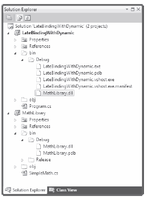

One place where you might decide to use the dynamic keyword is when you are working with reflection services, specifically when making late bound method calls. Back in Chapter 15, you saw a few examples of when this type of method call can be very useful, most commonly when you are building some type of extensible application. At that time, you learned how to use the Activator.CreateInstance() method to create an object, for which you have no compile time knowledge of (beyond its display name). You can then make use of the types of the System.Reflection namespace to invoke members via late binding. Recall the following example from Chapter 15.
static void CreateUsingLateBinding(Assembly asm) { try { // Get metadata for the Minivan type. Type miniVan = asm.GetType("CarLibrary.MiniVan"); // Create the Minivan on the fly. object obj = Activator.CreateInstance(miniVan); // Get info for TurboBoost. MethodInfo mi = miniVan.GetMethod("TurboBoost"); // Invoke method ('null' for no parameters). mi.Invoke(obj, null); } catch (Exception ex) { Console.WriteLine(ex.Message); } }
While this is code works as expected, you might agree it is a bit clunky. Here, you have to manually make use of the MethodInfo class, manually query the metadata, and so forth. The following is a version of this same method, now using the C# dynamic keyword and the DLR:
static void InvokeMethodWithDynamicKeyword(Assembly asm) { try { // Get metadata for the Minivan type. Type miniVan = asm.GetType("CarLibrary.MiniVan"); // Create the Minivan on the fly and call method! dynamic obj = Activator.CreateInstance(miniVan); obj.TurboBoost(); } catch (Exception ex) { Console.WriteLine(ex.Message); } }
By declaring the obj variable using the dynamic keyword, the heavy lifting of reflection is done on your behalf courtesy of the DRL!
The usefulness of the DLR becomes even more obvious when you need to make late bound calls on methods that take parameters. When you use “longhand” reflection calls, arguments need to be packaged up as an array of objects which are passed to the Invoke() method of MethodInfo.
To illustrate using a fresh example, begin by creating a new C# Console Application named LateBindingWithDynamic. Next, add a Class Library project to the current solution (using the File | Add | New Project... menu option) named MathLibrary. Rename the initial Class1.cs of the MathLibrary project to SimpleMath.cs, and implement the class like so:
public class SimpleMath { public int Add(int x, int y) { return x + y; } }
Once you have compiled your MathLibrary.dll assembly, place a copy of this library in the \bin\Debug folder of the LateBindingWithDynamic project (if you click the Show All Files button for each project of the Solution Explorer, you can simply drag and drop the file between projects). At this point, your Solution Explorer should look something like see Figure 18-4.
Figure 18-4 The LateBindingWithDynamic project has a private copy of MathLibrary.dll
Note Remember, the whole point of late binding is allowing an application to create an object for which it has no record of it the MANIFEST. This is why you manually copied MathLibrary.dll into the output folder of the Console project, rather than reference the assembly using Visual Studio.
Now, import the System.Reflection namespace into the Program.cs file of your Console Application project. Next, add the following method to the Program class, which invokes the Add() method using typical reflection API calls:
private static void AddWithReflection() { Assembly asm = Assembly.Load("MathLibrary"); try { // Get metadata for the SimpleMath type. Type math = asm.GetType("MathLibrary.SimpleMath"); // Create a SimpleMath on the fly. object obj = Activator.CreateInstance(math); // Get info for Add. MethodInfo mi = math.GetMethod("Add"); // Invoke method (with parameters). object[] args = { 10, 70 }; Console.WriteLine("Result is: {0}", mi.Invoke(obj, args)); } catch (Exception ex) { Console.WriteLine(ex.Message); } }
Now, consider the simplification of the previous logic with the dynamic keyword:
private static void AddWithDynamic() { Assembly asm = Assembly.Load("MathLibrary"); try { // Get metadata for the SimpleMath type. Type math = asm.GetType("MathLibrary.SimpleMath"); // Create a SimpleMath on the fly. dynamic obj = Activator.CreateInstance(math); Console.WriteLine("Result is: {0}", obj.Add(10, 70)); } catch (Microsoft.CSharp.RuntimeBinder.RuntimeBinderException ex) { Console.WriteLine(ex.Message); } }
Not too shabby! If you call both methods from the Main() method, you’ll see identical output.However, when using the dynamic keyword, you saved yourself quite a bit of work. With dynamically defined data, you no longer need to manually package up arguments as an array of objects, query the assembly metadata, or other such details.
Source Code The LateBindingWithDynamic project is included under the Chapter 18 subdirectory.